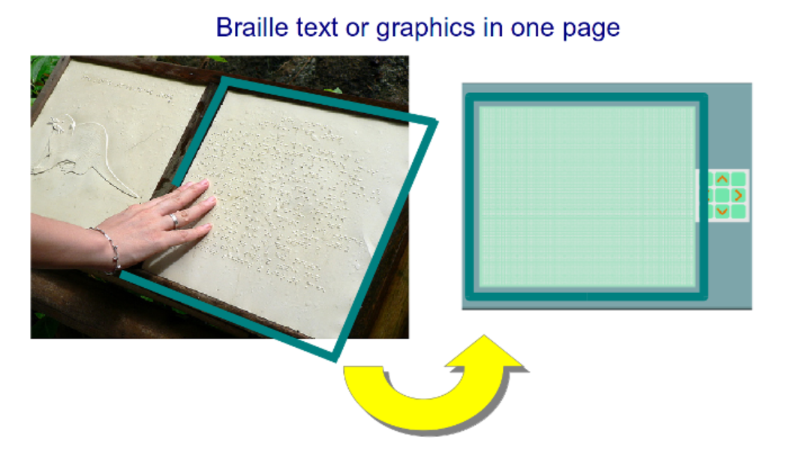

Recherche¶
Motivation et présentation¶
Plusieurs technologies d’assistance permettent aux personnes ayant une déficience visuelle de consulter des contenus multimédias. Les synthétiseurs et assistants vocaux, par exemple, rendent la lecture et la rédaction de textes accessibles sur des supports numériques. Néanmoins, plusieurs illustrations difficiles à décrire textuellement (cartes, organigrammes, plans, etc.) se prêtent moins bien à ces outils; c’est pourquoi des imprimantes à relief (aussi appelées « à embossage ») sont utilisées pour rendre ces illustrations accessibles par le sens du toucher en réalisant des images tactiles. Ces appareils sont toutefois dispendieux et l’impression sur papier ne permet pas d’interactions en temps réel comme des agrandissements d’une région ou le rafraîchissement d’un contenu.
Le but de ce projet est de réaliser un appareil numérique capable d’afficher des images tactiles, qui sont nommés afficheurs haptiques.
Méthodes actuelles d’accès aux contenus multimédias¶
Cette section présente des informations sommaires sur les moyens employés par les personnes ayant une déficience visuelle pour consulter des contenus multimédias.
Alphabet braille et équipement associés¶
Le braille, présenté en 1829, est un système d’écriture qui permet de représenter des lettres et autres symboles (entre autres mathématiques) à l’aide de points saillants.
Statistique Canada rapport une diminution constante du nombre de personnes capables d’utiliser l’alphabet braille; moins de dix pourcent d’entre eux savent l’utiliser. Néanmoins, l’alphabet braille demeure utilisé par les personnes sourdes et aveugles, qui ne peuvent employer des technologie basées sur le sens de l’ouïe 1.
Une plage braille est un appareil qui peut afficher des caractères brailles en temps réel. Ils fonctionnent avec un système de leviers actionnés par des matériaux piézoélectriques. Puisque le dispositif est volumineux, les plages braille ne peuvent afficher qu’une ligne de 40 à 80 caractères. Leur prix oscille entre 3500 et 15 000 dollars américains 2.
Synthétiseurs et assistants vocaux¶
Des synthétiseurs capables de lire des textes sont intégrés à des systèmes d’exploitation et des logiciels. Plusieurs personnes aveugles les préfèrent à la lecture de caractère braille. Des outils pour dicter textes sont aussi disponibles.
Ces outils sont toutefois moins utiles dans certains contextes. Un exemple commun est celui d’une personne qui doit écrire et écouter en même temps, comme pour prendre des notes pendant une conversation téléphonique : une plage braille devient alors plus utile 3.
Images tactiles¶
Les images tactiles peuvent être imprimées pour représenter des concepts difficiles à expliquer textuellement. Les images sont réalisées de plusieurs manières :
Un moule déformer une feuille de papier ou de carton pour y inscrire un motif; cette technique est dispendieuse et surtout utilisée en impression à grande échelle.
Une encre déposée sur le papier et chauffée soulève la surface pour y inscrire les motifs.
On ne peut pas simplement imprimer une image conventionnelle sous forme tactile. Il est nécessaire de la modifier pour s’assurer que les formes soient facilement identifiables au toucher. Des guides détaillés sur l’élaboration efficace d’images tactiles sont disponibles en ligne 4.
Prototypes d’afficheurs haptiques¶
J’ai répertorié un produit commercial qui peut afficher des images tactiles pouvant être rafraîchies :
Écran à images tactiles par l’entreprise coréenne Tactisplay Corp. Peu de détails sont disponibles sur le fonctionnement interne de l’appareil, mais on note une grande résolution (plusieurs milliers de cellules) mais un poids encombrant (6 kg) et un prix vraisemblablement élevé. 5.
Schéma de fonctionnement de l’appareil de Tactisplay Corp.¶
Le prix de ces appareils est confidentiel : il faut contacter le fabriquant directement pour l’obtenir et prévoir un délai de livraison de plusieurs mois. Certains avancent qu’ils coûte au minimum 7000 dollars américains.
D’autres projets expérimentaux ont été développés dans l’optique de diminuer les coûts de fabrication :
Écran hyperbraille, un projet financé par le Bundesministerium für Wirtschaft und Technologie en Allemagne. Un mécanisme piézoélectrique contrôle la position des broches 6.
Projet « Blindpad » par l’Istituto Italiano di Tecnologia. L’écran a une résolution de 12 par 16 cellules. Les mouvements sont contrôlés par des électroaimants développés spécifiquement pour ce projet 7.
Afficheur tactile par K. Zhang et al. L’appareil se distingue par sa capacité à afficher des images partiellement tridimensionnelles avec des broches dont la hauteur peut être contrôlée précisément. Par contre, le prototype requiert une alimentation de 320 V, ce qui le rend moins pratique 8.
Afficheur pneumatique par S.O’Modhrain et al. Cet appareil utilise la pression d’un gaz pour actionner les cellules sur le pavé. Ce concept permet une plus grand résolution parce que les actionneurs n’ont pas besoin d’être placés directement sous les cellules, mais le contrôle de la pression entraîne des problèmes liés aux mécanismes pneumatiques (fuites, baisse de pression, etc.) 9.
Pistes de réalisation de l’appareil¶
On cherche ici à poser des idées utiles à la réalisation du projet en prenant appuie sur les réalisations mentionnées ci-haut.
Constats initiaux¶
L’approche triviale pour concevoir l’appareil est d’installer un actionneur (mécanique ou piézoélectrique) sous chaque cellule pour les faire monter ou descendre. Bien que simple, elle entraîne plusieurs désavantages :
Les matériaux piézoélectriques sont fragiles et dispendieux. De plus, comme ils se déforment peu (environ 0,1 % de leur volume), un petit levier doit amplifier le mouvement, ce qui augmente la complexité, la fragilité et le prix du système.
Le système contient trop de pièces; ça le rend difficile à assembler et lourd (l’appareil de Tactisplay pèse six kilogrammes).
Pour réaliser un appareil abordables et ergonomique, il faut donc diminuer le nombre d’actionneurs. On peut y parvenir avec un système mécanique séquentiel.
Critères d’évaluation¶
La qualité de l’appareil sera établie selon les critères suivants :
Prix des matériaux
Complexité de l’assemblage et nombre de pièces
Temps de rafraîchissement (moins de huit secondes)
Hauteur des cellules et distance entre elles
Consommation d’énergie
Ergonomie (poids et taille)
Ces critères correspondent aux éléments qui détermine le prix de fabrication (matériaux, nombre de pièces) et l’ergonomie (rapidité, poids, etc.).
Logiciels adaptés aux personnes atteintes de cécité¶
Il existe des normes et recommendations pour concevoir des logiciels accessibles aux personnes ayant plusieurs handicaps. On compte, parmi les plus importantes :
Les fonctionnalités du programmes doivent toutes être accessible avec un clavier, la souris étant difficile à contrôler pour certaines personnes.
Les textes doivent pouvoir s’agrandir.
Un synthétiseur vocal doit pouvoir lire le contenu du programme. Des systèmes d’exploitation (Windows, MacOS) intègrent ces outils tandis que des synthétiseurs gratuits sont aussi disponibles.
Les couleurs ne doivent jamais être utilisées comme unique manière de transmettre une information.
La liste complète est disponible dans l’article de S. Burgstahler 10.
Références¶
- 1
Mulholland, Angela. With new technology, few blind Canadians read braille (2010). https://www.ctvnews.ca/with-new-technology-few-blind-canadians-read-braille-1.503149
- 2
American Foundation for the Blind. Refreshable Braille Displays. consulté le 24 janvier 2021. https://www.afb.org/node/16207/refreshable-braille-displays
- 3
Helsinki University of Technology. History and Development of Speech Synthesis. Consulté le 25 janvier 2021. http://research.spa.aalto.fi/publications/theses/lemmetty_mst/chap2.html
- 4
Braille Authority of North America, Canadian Braille Authority / l’Autorité Canadienne du Braille. Guidelines and Standards for Tactile Graphics. Consulté le 25 janvier 2021. http://brailleauthority.org/tg/web-manual/
- 5
Tactisplay Corp. Graphic Tactile Display. Consulté le 26 janvier 2021. http://www.tactisplay.com/graphic-tactile-display/
- 6(1,2)
Hyperbraille. Das grafikfähige Display für Blinde. Consulté le 26 janvier 2021. http://www.hyperbraille.de/
- 7(1,2)
Blindpad. Consulté le 25 janvier 2021. https://www.blindpad.eu/
- 8(1,2)
Zhang, Kai et Follmer, Sean. Electrostatic Adhesive Brakes for High Spatial Resolution Refreshable 2.5D Tactile Shape Displays. Consulté le 24 janvier 2021. http://shape.stanford.edu/research/ElectrostaticAdhesiveBrakes/
- 9(1,2)
Atherton, Kelsey D. Dynamic Touchscreen Could Display In Braille. Consulté le 25 janvier 2021. https://www.popsci.com/new-touch-screen-design-could-display-in-braille/
- 10
Burgstahler, Sheryl. Designing Software that is Accessible to Individuals with Disabilities. Consulté le 26 janvier 2021. https://www.washington.edu/doit/sites/default/files/atoms/files/Designing-Software-Accessible-Individuals-Disabilites.pdf